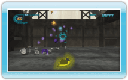
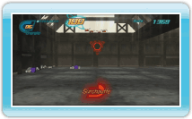

Le but du jeu 530 Eco Shooter est de terminer chaque niveau avec le score le plus élevé possible. Tirez sur les boîtes de conserve pour gagner des points tout en suivant un chemin prédéterminé. Visez les boîtes en l’air pour obtenir plus de points. Les boîtes détruites se transforment en capsules d’énergie. Aspirez-les pour recharger votre énergie. Si une boîte de conserve vous touche, vous perdez des unités d’énergie. La partie se termine si votre énergie se vide totalement. Toute l’énergie qu’il vous reste à la fin d’un stage est convertie en points bonus qui viennent s’ajouter à votre score.
Energie
Les capsules d’énergie produites par les boîtes de conserve détruites apparaissent ainsi:
Deux unités d’énergie
Trois unités d’énergie
Cinq unités d’énergie
Dix unités d’énergie
En règle générale, les boîtes de conserve les plus difficiles à atteindre produisent plus d’énergie à leur destruction.
Aspirer
Vous pouvez récupérer de l’énergie en utilisant la fonction d’aspiration de votre aspiro-canon. Maintenez enfoncé pour commencer à aspirer. Si vous relâchez tout en pointant une capsule d’énergie, elle sera aspirée par l’aspiro-canon pour s’ajouter à vos munitions. Vous pouvez aussi relâcher après avoir pointé plusieurs capsules d’énergie pour toutes les aspirer dans l’aspiro-canon.
Cette fonction d’aspiration de l’aspiro-canon ne peut être utilisée que pour une durée limitée avant de surchauffer. En cas de surchauffe, la fonction d’aspiration ne peut plus être utilisée avant refroidissement total. Le refroidissement se produit dès lors que la fonction d’aspiration n’est plus utilisée.
 enfoncé pour commencer à aspirer. Si vous relâchez
enfoncé pour commencer à aspirer. Si vous relâchez